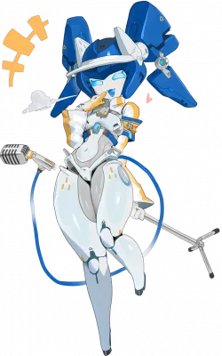
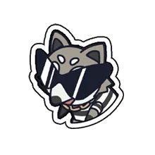

怪物官方原文 ↗裁判艾米1. 不会主动攻击。 2. 可以反击。 3. 加入战斗后会主动攻击。编号1061尺寸250数值（攻击 / 防御 / 生命）难度攻击防御生命星币普通512414困难512714噩梦613014疯狂623314技能被动技能｜主持解说：受到伤害为0，移动的最终点数固定为2，持续解说比赛。 被角色主动挑战时，受到伤害为0效果移除，移动的最终点数固定为6，加入战斗。机制1. 不会主动攻击。 2. 可以反击。 3. 加入战斗后会主动攻击。相关内容人机交融卡牌/手牌决赛大赛场地图星趴怪物图鉴图鉴海选赛运动场地图淘汰赛运动场地图Z3000角色